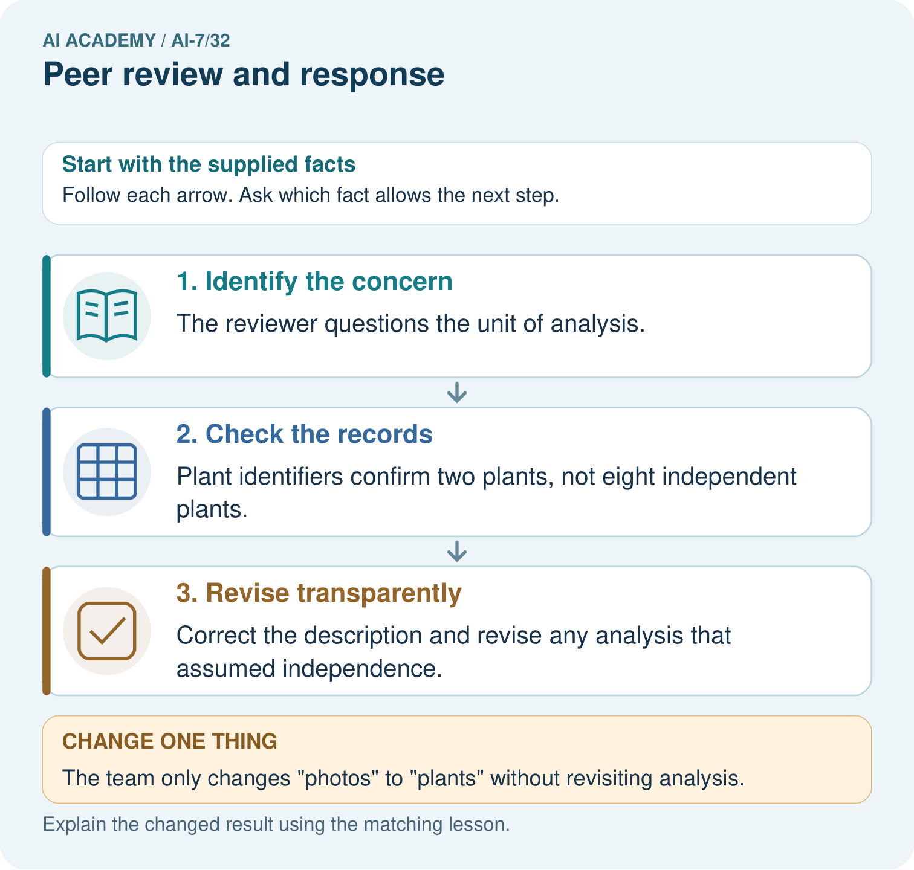
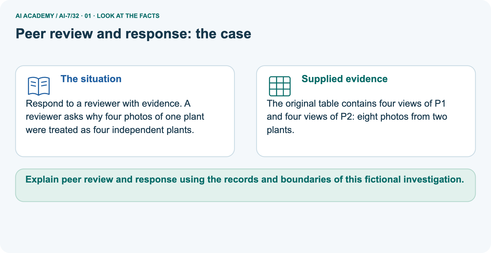
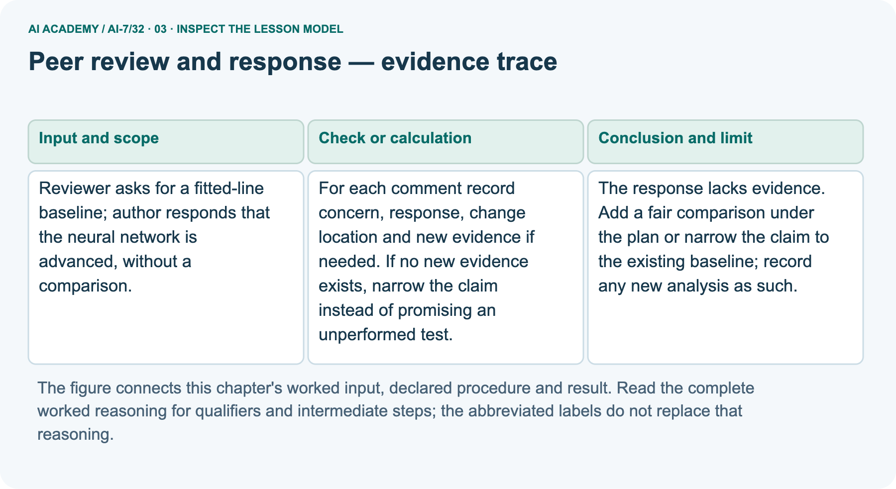
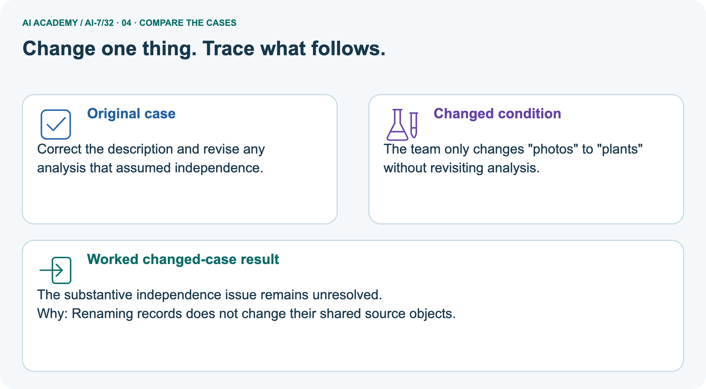
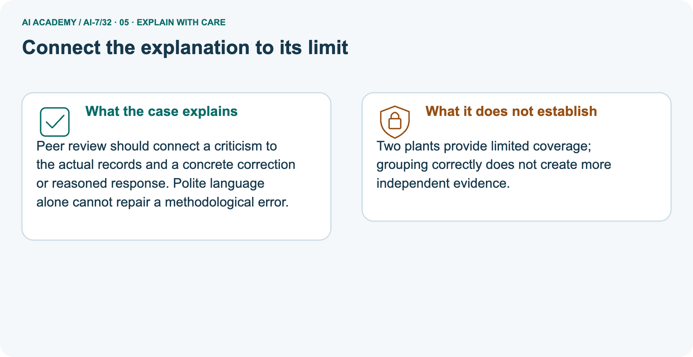
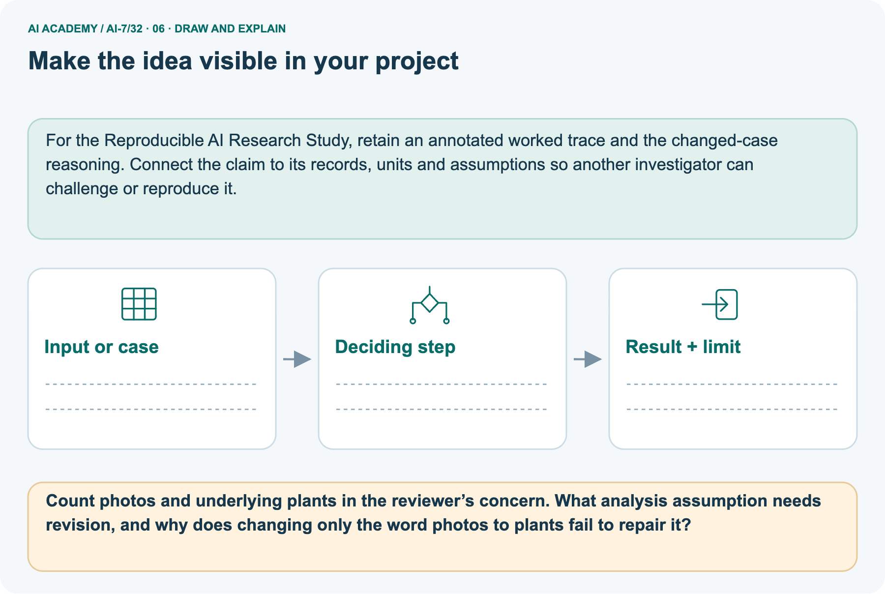

AI Academy · Level 7 · Grade 12 · Week 32 · Teacher guide
Peer review and response
Learn to understand, design, build, test and explain AI systems responsibly.
Project: Reproducible AI Research Study
THE CONNECTED WEEK
Teach the evidence-to-conclusion chain for Peer review and response
Address the concern, preserve original records and distinguish proposed analysis from completed evidence.
Keep one habit: Model the main case → reveal the picture gradually → probe limits → assess independent reasoning → plan a changed-case return.
Main lesson · Section 1
Prepare the connected research investigation
Keep modelling, shared practice and independent evidence distinct.
Target and main teaching plan
Primary target: Explain the mechanism and terminology of peer review and response
| Session | Sequence and minutes | Resources |
|---|---|---|
| Session 1 · Understand · 45 min | 0–7: recall and prerequisite; 7–15: inspect the concrete case and predict; 15–30: teacher models the worked trace; 30–40: learners explain a step using the text and visual; 40–45: check the core idea. | Use Your mission, Notice the evidence, See how it works, Words that unlock the idea and Follow a worked example; record the brief recall in the workbook. |
| Session 2 · Practise · 45 min | 0–5: retrieve the procedure; 5–15: W2 completion practice; 15–23: explain and check with a partner; 23–30: each learner answers the misconception check; 30–40: targeted reteaching or a harder variation; 40–45: prepare the investigation. | Use Find and repair a mistake, Practise together and Run the investigation, with workbook W2 and Individual reasoning check. |
| Session 3 · Investigate and transfer · 45 min | 0–5: retrieve the decision rule; 5–20: investigate or trace; 20–30: start the independent case; 30–38: connect the project; 38–43: act on feedback; 43–45: plan the return check. | Use Run the investigation, Build your understanding, Connect your project and Show what you know. Reserve further time for the full task set. Use a code example only where one is actually supplied. |
This is a starting allocation of 135 minutes, not a validated duration. Preserve all named topics. Schedule extra time for connected examples, the full investigation, independent cases and project building.
Repeated copies of a case share one recorded attempt; they are not new evidence.
Preparation and prerequisite
Lesson and workbook; paper and pencil
Calculator and optional local Python 3 for arithmetic; no live API or private data
Prepare the fresh retry separately and withhold its solution until after collection
A result depends on the inputs, procedure and conditions that produced it. Preserve data roles and distinguish observed outcomes from predictions or unmeasured conditions.
If the prior concept cannot be explained, use a short retrieval activity before this chapter.
Opening retrieval
Without opening the old lesson, explain one key idea from Writing results and limitations. Give an example and a mistake that the idea helps you avoid.
Look for: Explain the mechanism and terminology of writing results and limitations
Reference example, not the only acceptable wording: Teacher explanation: Results and limitations should state observed estimates before interpreting them. Separate measured comparisons from causal or deployment claims.
Give counts, denominators, effect sizes, valid uncertainty and failed conditions. State missing evidence and preserve the original primary outcome.
Without opening the old lesson, explain one key idea from Figures that preserve evidence. Give an example and a mistake that the idea helps you avoid.
Look for: Explain the mechanism and terminology of figures that preserve evidence
Reference example, not the only acceptable wording: Teacher explanation: Figures should preserve denominators, scales and uncertainty rather than exaggerate the preferred comparison.
A plot is a representation of evidence, not extra evidence. Label axes, units, cases and scope. For simple comparative bars use a zero baseline or explicitly justify another plot.
Show condition breakdowns and unassessed counts where relevant.
Without opening the old lesson, explain one key idea from Inspecting failures and anomalies. Give an example and a mistake that the idea helps you avoid.
Look for: Explain the mechanism and terminology of inspecting failures and anomalies
Reference example, not the only acceptable wording: Teacher explanation: Failure inspection generates explanations to test. An unusual result is not automatically a bad data point.
Compare raw outputs, input validity and procedure traces. Correct demonstrable measurement errors with provenance; retain valid unusual observations. Label post-result investigations exploratory.
Pictured end goal
Explain peer review and response using the records and boundaries of this fictional investigation.
Earlier wording, alternatives and picture transcripts
Teach the learning cycle
Retrieval answer guidance
Writing results and limitations
Figures that preserve evidence
Inspecting failures and anomalies
Compact alternative: two 45-minute sessions for the core explanation and W1–W5 only. The main plan uses three sessions; schedule further time for the complete investigation, project, visual journey and any code examples. Peer review challenges evidence, method and clarity. Responses should explain changes with artifacts rather than merely defend the original wording.
Use the supplied constructed scenarios to make the mechanism inspectable. Collect W4 before sharing solutions.
Students should name intermediate evidence and limitations; classroom pacing and learning effectiveness remain unvalidated.
Outcomes
Explain the mechanism and terminology of peer review and response
Apply the stated procedure to a new case with a traceable result
Identify an assumption or limitation and design a revealing follow-up
Preparation
Prerequisite answer
End goal for the pictorial case
This added worked case illustrates the week’s main idea. Retain all original and connected topics; schedule its practice within the teaching cycle.
Main lesson · Section 2
Model the whole case and check each inference
Keep the independent answer private until after the first attempt.
Definitions and complete contract
Peer review challenges evidence, method and clarity. Responses should explain changes with artifacts rather than merely defend the original wording.
For each comment record concern, response, change location and new evidence if needed. If no new evidence exists, narrow the claim instead of promising an unperformed test.
| Review item | Complete supplied exercise contract |
|---|---|
| Main concern | Fitted-line baseline comparison is missing |
| Main response | Neural network is advanced, without comparison results |
| Evidence status | No new baseline counts, design or raw outcomes supplied |
| Main repair options | Fair comparison under an explicit plan, labelled new analysis; or narrower claim |
| Separate picture | Four views of P1 plus four views of P2 |
| Underlying source identities | Eight photos, two plants; not eight independent plants |
| Review artifact | Concern, response, change location, evidence and status |
| Limits | No actual reviewer communication, new experiment or source-independence proof |
Main evidence ledger and checked key
| Main response step | Evidence-grounded alternative |
|---|---|
| Identify concern | Does performance differ from a fitted-line baseline under aligned conditions? |
| Reject unsupported defense | Advanced architecture is not comparative evidence |
| If no comparison exists | Narrow the claim to the actual recorded comparison |
| If new comparison is proposed | Specify aligned cases/metric/eligibility and label new analysis |
| Change location | Identify the actual manuscript section/artifact when revised; do not invent it |
| Status | Proposed, completed or blocked, with corresponding evidence |
| Preserve history | Original claim, response and later analysis remain distinguishable |
Main advanced-network wording does not answer the baseline request. Require a fair documented comparison labelled new work, or a narrower claim using actual evidence; do not fabricate results. Picture has eight photos but only two plant IDs: four views each. Revisit grouping, role allocation and uncertainty assumptions that treated views as independent plants. Word replacement alone fails.
No revised outcome rate or actual split leakage is supplied. Independent response should report actual failure counts with denominators, locations and evidence, preserve relevant limitations and disclose any missing records. Deleting limitations does not answer the concern. No actual communication, completed experiment or independence guarantee occurs.
Peer review and response — evidence trace
Guided: The response lacks evidence. Add a fair comparison under the plan or narrow the claim to the existing baseline; record any new analysis as such.
Qualification: Agreement with a reviewer is not required, but a disagreement needs explicit reasoning and evidence.
Exit: accept a concrete variation with its predicted outcome and a stated condition that would challenge the mechanism; reject a claim resting on unmeasured evidence.
Reviewer asks for a fitted-line baseline; author responds that the neural network is advanced, without a comparison.
The response lacks evidence. Add a fair comparison under the plan or narrow the claim to the existing baseline; record any new analysis as such.
Compare the intermediate evidence with the final statement. Explain why each number or decision follows from the stated inputs.
The conclusion belongs to this scenario and procedure; changing the inputs, evaluation population or authority can change what it establishes. Retain the raw record so a later revision can be compared honestly.
Boundary and misconception probes
| Review-response audit | Checked interpretation |
|---|---|
| Reviewer asks for baseline | Answer with a comparison or a narrower claim |
| Author says advanced | Architecture praise is not evidence |
| New analysis planned | Keep status proposed until artifacts/results exist |
| Eight photos from two plants | Do not count eight independent plants |
| Correct the word only | Does not repair downstream unit assumptions |
| Two plant IDs | Not proof of independent sampling |
| Missing failure counts | Provide actual counts/denominators or disclose absence |
| Delete limitation paragraph | Hides concern rather than resolving it |
Separate pictured facts and full reasoning
Respond to a reviewer with evidence. A reviewer asks why four photos of one plant were treated as four independent plants.
The original table contains four views of P1 and four views of P2: eight photos from two plants.
The separate picture has four views of plant P1 and four of P2, so eight photos represent two distinct plant IDs. A claim of eight independent plants is unsupported. Changing the word photos to plants does not change the source structure. Revisit the sampling/inference unit, group allocation across data roles and any uncertainty calculation that assumed eight independent plant observations.
The picture supplies no correctness labels or split assignment, so neither a revised accuracy nor actual leakage can be inferred. Correct grouping does not create more plants, and two different IDs do not prove independent sampling.
| Source grouping | Photo views | Plant identities |
|---|---|---|
| P1 | V1, V2, V3, V4 | One |
| P2 | V1, V2, V3, V4 | One |
| Total | Eight photos | Two distinct plant IDs |
| Unsupported analysis premise | Eight independent plants | Source structure contradicts this count |
| Required reconsideration | Grouping, split roles and uncertainty assumptions | Not just a word replacement |
| Outcome/split evidence | Not supplied | No invented revised score or known leakage |

Picture trace and changed-condition key


Read the picture one step at a time
Peer review should connect a criticism to the actual records and a concrete correction or reasoned response. Polite language alone cannot repair a methodological error.
Two plants provide limited coverage; grouping correctly does not create more independent evidence.
Change: The team only changes "photos" to "plants" without revisiting analysis.
Prediction: The substantive independence issue remains unresolved.
Reason: Renaming records does not change their shared source objects.
Earlier wording, alternatives and picture transcripts
Begin by writing the question the procedure is intended to answer. Identify the information already supplied, the information it will produce and the information still missing.
These are constructed classroom examples; they do not require live accounts, private records or an external service. Do not treat a plausible explanation as a measured outcome.
Before applying the procedure, write its units, denominator or decision boundary where relevant. A partner should be able to repeat each step using the same inputs.
If a required input is absent or violates the stated contract, record that condition explicitly instead of quietly replacing it with a convenient value.
| Term | Meaning |
|---|---|
| Review comment | A concern about evidence, method or presentation |
| Response record | A mapping from comment to change or justified disagreement |
| Claim narrowing | Reducing a statement to the evidence actually available |
Model the reasoning aloud
Use the complete worked example below before asking learners to complete W2. Reveal a small part, invite a prediction, then explain the deciding step.
These teacher notes contain solutions; do not reveal the independent case answer during modelling.
| Thinking move | Teacher prompt |
|---|---|
| Plan | What is given? What is the question? Which procedure fits these facts? |
| Do | Point to each input and intermediate step in the worked trace. Name the rule that allows the next step. |
| Check | Does the output answer the question? Which assumption or limitation prevents a larger claim? |
Use the diagram and verbal explanation together. Ask learners to match a sentence to a specific visual step; do not assign learners fixed visual or auditory learning styles.
A pictorial worked case: Peer review and response
The facts we will use



Why this result follows
What this example does not establish
Change one thing in the pictured case
Ask while showing the picture
Cover the result. Ask learners to name the inputs and predict the next step. Uncover one step, connect the icon to the actual procedure, and explain its evidence. Then change the supplied condition and compare.
The picture is a representation; it does not document execution of a real AI model.
Main lesson · Section 3
Model a step,then remove help
Collect each learner’s reasoning before showing a key.
Current completion task and checked reasoning
Completion task: Reviewer asks for a fitted-line baseline; author responds that the neural network is advanced, without a comparison. Show the intermediate steps and give the conclusion with its scope.
Teacher check: Teacher explanation: The response lacks evidence. Add a fair comparison under the plan or narrow the claim to the existing baseline; record any new analysis as such.
Start by identifying the given inputs together. Leave the intermediate steps blank. If needed, model one step, then withdraw that help on the next step. Move to a full trace only when the partial trace is understood.
For partners, alternate explainer and checker; collect a response from every learner before discussion.
Individual misconception check
Use the worked case for Peer review and response. Proposed explanation: “The worked result establishes every future case”. Decide whether this explanation is supported.
Point to the step or supplied fact that decides; explain your repair if needed.
Expected correction: Agreement with a reviewer is not required, but a disagreement needs explicit reasoning and evidence.
Collect explanations, not only yes/no votes. If a misunderstanding is common, re-model the relevant step for the class.
If it affects a few learners, give a short targeted group explanation while others solve a more demanding variation.
Pictured reasoning and changed case
Count photos and underlying plants in the reviewer’s concern. What analysis assumption needs revision, and why does changing only the word photos to plants fail to repair it?
The reviewer questions the unit of analysis. Plant identifiers confirm two plants, not eight independent plants. Correct the description and revise any analysis that assumed independence.
Changed case: The substantive independence issue remains unresolved. Renaming records does not change their shared source objects.
Changed-case reasoning: The substantive independence issue remains unresolved. Renaming records does not change their shared source objects.
Collect each learner’s explanation before discussion. Use the first missing connection between input, deciding step and result to choose support. This question is worked-case practice, not fresh mastery evidence.
Accessible support and extension
Use the worked example in Sections 3 and 6. Collect a prediction before revealing its result; ask the learner to point to each intermediate fact.
Provide an input/procedure/result/limit frame and a calculator when needed. Ask students to identify the first step before completing the whole trace.
Extension: compare two concrete variants of this mechanism while holding unrelated conditions fixed; report both successful and unsuccessful outcomes.
Earlier wording, alternatives and picture transcripts
| Time or stage | Teacher action |
|---|---|
| Session 1: 0–7 minutes | Retrieve the prerequisite; identify the input, procedure and evidence source. |
| 7–18 minutes | Explain See how it works and Words that unlock the idea. Complete W1 with a mechanism-based explanation. |
| 18–32 minutes | Trace the declared procedure and worked case. Complete W2, recording intermediate steps. |
| 32–45 minutes | Discuss the diagram with the worked input; use W3 to distinguish measured claims and limitations. |
| Session 2: 0–8 minutes | Retrieve the worked reasoning and collect the guided response before discussing it. |
| 8–20 minutes | Compare a proposed boundary variant with the original case; identify what remains fixed. |
| 20–35 minutes | Collect W4 independently. Require the procedure trace and the bounded conclusion. |
| 35–45 minutes | Use W5 and exit responses for feedback. Administer the fresh retry after feedback and preserve both attempts. |
Reduce help deliberately
Individual reasoning check
Pictorial practice question
Reasoned teacher answer
Main lesson · Section 4
Run the complete supplied investigation
Separate predictions,actual runs and paper traces.
Complete inputs,expected results and limits
Main advanced-network wording does not answer the baseline request. Require a fair documented comparison labelled new work, or a narrower claim using actual evidence; do not fabricate results. Picture has eight photos but only two plant IDs: four views each. Revisit grouping, role allocation and uncertainty assumptions that treated views as independent plants. Word replacement alone fails.
No revised outcome rate or actual split leakage is supplied. Independent response should report actual failure counts with denominators, locations and evidence, preserve relevant limitations and disclose any missing records. Deleting limitations does not answer the concern. No actual communication, completed experiment or independence guarantee occurs.
Diagnose the current misconceptions
The worked result establishes every future case: Agreement with a reviewer is not required, but a disagreement needs explicit reasoning and evidence.
A missing input may be replaced without recording the change: A replacement changes the evidence or contract. Record the change and its justification; do not silently turn unknown into a measured value.
Repeating an assessed case is new independent evidence: A replay checks consistency. An example used for feedback or revision cannot later be described as untouched final evaluation.
Use Section 9 for the evidence ledger. Add a boundary or missing-input case and record the expected response before checking. More successful repeats of one case do not establish wider coverage.
Choose accessible support
| What the response shows | Next teaching action |
|---|---|
| Missing or misread facts | Read the case aloud, mark supplied versus unknown facts, and let the learner restate it. |
| Wrong procedure | Return to the deciding step in the worked case. Contrast it with the proposed incorrect explanation. |
| Arithmetic or implementation error | Trace intermediate values or lines; preserve the first mismatch and retry that step. |
| Correct result without a reason | Ask for a trace and a changed case before marking independent understanding. |
| An unsupported wider claim | Ask which supplied evidence supports the claim and which further observation would be needed. |
Offer an oral explanation, drawing, enlarged visual or fewer examples when that removes a reading/writing barrier. Keep the same reasoning goal.
Stretch secure learners by changing a boundary or assumption and asking them to defend the effect, not simply by assigning more of the same questions.
Earlier wording, alternatives and picture transcripts
Match the support to the first error
Main lesson · Section 5
Assess the new research scenario
Keep the selected answer private until after a first attempt.
Selected independent task and checked answer
Selected case: Reviewer notes missing failure counts; author deletes the limitation paragraph. What is an adequate response?
Teacher explanation: Supply counts and denominators with raw evidence, retain the limitation and revise the claim. Deleting criticism does not resolve the evidence gap.
Judge explanation,trace and limits
| Dimension | Evidence required |
|---|---|
| Explanation | Names the applicable idea or procedure and ties it to the supplied facts. |
| Trace and result | Preserves the given inputs and shows the relevant intermediate steps; distinguishes a prediction from an observed execution. |
| Limits | States the assumptions, missing evidence or conditions under which the result would change. |
Record each dimension as not yet, with support, or independent. Accept a valid alternative procedure with a defensible trace.
Do not penalise an honestly recorded model failure if the learner correctly explains its evidence and limits.
Give one usable repair
Name the earliest unsupported step and give one action to repair it. Have the learner make that repair now and explain why. Then assess the relevant skill on a fresh, fully specified case.
Confirm it was not previously practised with feedback; solve and check the new case before assigning it. A follow-up design prompt is a starting brief, not automatically an equivalent test.
W1 Explain the mechanism
Explain the weekly mechanism in your own words. Use the worked scenario to name its input, decision rule and output.
Teacher explanation: Peer review challenges evidence, method and clarity. Responses should explain changes with artifacts rather than merely defend the original wording.
For each comment record concern, response, change location and new evidence if needed. If no new evidence exists, narrow the claim instead of promising an unperformed test.
W2 Trace the worked case
Reviewer asks for a fitted-line baseline; author responds that the neural network is advanced, without a comparison. Show the intermediate steps and give the conclusion with its scope.
Teacher explanation: The response lacks evidence. Add a fair comparison under the plan or narrow the claim to the existing baseline; record any new analysis as such.
W3 Audit the limit
A report omits this qualification: Agreement with a reviewer is not required, but a disagreement needs explicit reasoning and evidence.
Explain how omitting it could change a reader's interpretation, and write an accurate replacement.
Teacher explanation: Agreement with a reviewer is not required, but a disagreement needs explicit reasoning and evidence.
State the observed result separately from the unverified or out-of-scope claim; preserve the original evidence rather than inventing a missing fact.
W5 Design a revealing follow-up
For the worked scenario, propose one additional case that could reveal a failure, describe its expected outcome before running it, and explain what would need to remain fixed for a fair comparison.
Do not reuse W4 as a new final test after receiving feedback.
Teacher explanation: Accept a concrete variant of the worked input or a missing/conflicting/boundary condition, with an expectation derived from the declared procedure.
Require preserved settings, original outputs and data roles. Agreement with a reviewer is not required, but a disagreement needs explicit reasoning and evidence.
The new case should test this particular mechanism rather than merely restate the original result.
Earlier wording, alternatives and picture transcripts
Guided and exit questions
Guided: The response lacks evidence. Add a fair comparison under the plan or narrow the claim to the existing baseline; record any new analysis as such.
Qualification: Agreement with a reviewer is not required, but a disagreement needs explicit reasoning and evidence.
Exit: accept a concrete variation with its predicted outcome and a stated condition that would challenge the mechanism; reject a claim resting on unmeasured evidence.
W1 Explain the mechanism
W2 Trace the worked case
W3 Audit the limit
W4 Apply a new case independently
Reviewer notes missing failure counts; author deletes the limitation paragraph. What is an adequate response?
Teacher explanation: Supply counts and denominators with raw evidence, retain the limitation and revise the claim. Deleting criticism does not resolve the evidence gap.
W5 Design a revealing follow-up
Independent assessment and fresh retry
W4: Supply counts and denominators with raw evidence, retain the limitation and revise the claim. Deleting criticism does not resolve the evidence gap. Require intermediate reasoning and the stated scope.
Fresh retry: Reviewer asks whether timing includes retrieval; record does not specify. Expected reasoning: State the timing boundary if recoverable from records; otherwise mark speed comparison unresolved and narrow the claim.
If students need support, record it and reassess with another new case rather than awarding independence to a copied answer.
Assess independent transfer
Selected case answer
Feedback that the learner uses
Main lesson · Section 6
Connect, support and revisit research reasoning
Use saved evidence and assumptions to choose the next question.
Project and next-week bridge
Add a labelled peer review and response evidence sheet to Reproducible AI Research Study. Show how you can explain the mechanism and terminology of peer review and response.
Use the supplied fictional case and keep its inputs, intermediate steps, calculation or prediction, and limitation. Connect this record to last week’s record; a matching answer without a trace is insufficient.
Provide an input/procedure/result/limit frame and a calculator when needed. Ask students to identify the first step before completing the whole trace.
Extension: compare two concrete variants of this mechanism while holding unrelated conditions fixed; report both successful and unsuccessful outcomes.
Next connection: Independent reproduction check. Preserve the current case record and retrieve its evidence boundary before moving on.
Retain the project ledger and assess a changed case after support. Check the relevant prerequisite before carrying this component forward.
For the Reproducible AI Research Study, retain an annotated worked trace and the changed-case reasoning. Connect the claim to its records, units and assumptions so another investigator can challenge or reproduce it.
Delayed return and support record
Suggested return points in this level: ai-7/33, ai-7/35. Use actual classroom dates, adjusting for holidays and gaps. One, three and six teaching weeks are scheduling choices, not a claimed optimal spacing.
At a delayed check, ask for the idea from memory and a changed application. Compare with the earlier independent response and record support used.
For a new level, revisit the previous capstone before checking the new prerequisites.
| Record | Teacher evidence |
|---|---|
| Learner code and date | |
| Concept and case used; prior exposure | |
| Explanation / trace / limits | |
| Support and first repair | |
| Changed case and delayed outcome | |
| Next teaching action |
Use the evidence to choose reteaching or the next step. A completed page, confidence rating or attractive project does not by itself demonstrate understanding.
Earlier wording, alternatives and picture transcripts
Plan the delayed return
Project evidence from this case
Reference bank and extra practice
Choose the reference that helps your next step.
Reference · Alternative planning checklist
Reference · Section 7
Reference · Alternative planning checklist
Use alongside the main route when helpful.
Planning,assessment and project reminders
Teaching target: Explain the mechanism and terminology of peer review and response
Prepare the labelled worked-case picture, the matching workbook, fictional input cards and a place for individual responses. Check a local Python 3 environment before class; have a paper-trace version ready.
| Session | Plan | Resources |
|---|---|---|
| Session 1 · Understand · 45 min | 0–7: recall and prerequisite; 7–15: inspect the concrete case and predict; 15–30: teacher models the worked trace; 30–40: learners explain a step using the text and visual; 40–45: check the core idea. | Use Your mission, Notice the evidence, See how it works, Words that unlock the idea and Follow a worked example; record the brief recall in the workbook. |
| Session 2 · Practise · 45 min | 0–5: retrieve the procedure; 5–15: W2 completion practice; 15–23: explain and check with a partner; 23–30: each learner answers the misconception check; 30–40: targeted reteaching or a harder variation; 40–45: prepare the investigation. | Use Find and repair a mistake, Practise together and Run the investigation, with workbook W2 and Individual reasoning check. |
| Session 3 · Investigate and transfer · 45 min | 0–5: retrieve the decision rule; 5–20: investigate or trace; 20–30: start the independent case; 30–38: connect the project; 38–43: act on feedback; 43–45: plan the return check. | Use Run the investigation, Build your understanding, Connect your project and Show what you know. Reserve further time for the full task set. Use a code example only where one is actually supplied. |
Before class, solve the supported practice: Reviewer asks for a fitted-line baseline; author responds that the neural network is advanced, without a comparison.
Show the intermediate steps and give the conclusion with its scope.
Reasoned practice answer: Teacher explanation: The response lacks evidence. Add a fair comparison under the plan or narrow the claim to the existing baseline; record any new analysis as such.
Check every learner before discussion: Use the worked case for Peer review and response. Proposed explanation: “The worked result establishes every future case”. Decide whether this explanation is supported.
Point to the step or supplied fact that decides; explain your repair if needed.
Misconception repair: Agreement with a reviewer is not required, but a disagreement needs explicit reasoning and evidence.
Support: read the exact case aloud, enlarge the labelled picture, supply input cards and model only the first deciding step. Accept a spoken explanation or drawing; retain the reasoning goal.
Extension: The team only changes "photos" to "plants" without revisiting analysis. Require a prediction and a reason before comparing. Expected result: The substantive independence issue remains unresolved.
Reason: Renaming records does not change their shared source objects.
Independent assessment: withhold the reserved answer until the learner has attempted the new case. Record support separately from correctness.
| Criterion | Not yet | With support | Independent |
|---|---|---|---|
| Explanation | Names an answer without a deciding fact | Uses a hint to link fact and decision | Explains the deciding fact in own words |
| Trace or test | Cannot connect input and result | Completes steps with prompts | Traces or tests a changed case accurately |
| Limits and revision | Claims more than evidence supports | Names a limit after a prompt | States a defensible limit and useful next test |
Project checkpoint: Present and defend. Demonstrate the system, explain one failure and justify the next improvement with evidence.
Use the weekly teacher answer for topic-specific reasoning. A saved progress tick is an activity record; judge mastery from the learner’s explanation and evidence.
Reference · Feedback,labs and repair paths
Reference · Section 8
Reference · Feedback,labs and repair paths
Retain the first attempt and the evidence used for a repair.
Feedback and record guidance
Use the two formative questions as supported practice, not as independent mastery scores. Discuss the deciding evidence rather than accepting a guessed selection.
The feedback comes from the reviewed public worked case. Do not reveal the separately reserved independent teacher answer until the learner has attempted that case.
This week has no code block. Use this routine when a later lesson includes an executable lab.
Ask students to predict before running code. Preserve errors and actual outputs; collect a changed test and an explanation. The branch-boundary and indexing lessons deliberately include failure cases.
Use the earlier worked-explanation links to address a specific missing building block, then return to the current question. Adapt this suggestion after observing the learner; it is not an automatic diagnosis.
Collect the completed-work portfolio as evidence. Record support separately from correctness, and assess explanation, trace/test and limitations. Progress ticks and quiz selections alone do not establish mastery.
Reference · Teach with the six pictures
Reference · Section 9
Reference · Teach with the six pictures
Choose one picture for a particular reasoning move.
01. Peer review and response: the case



Respond to a reviewer with evidence. A reviewer asks why four photos of one plant were treated as four independent plants.
Supplied facts: The original table contains four views of P1 and four views of P2: eight photos from two plants.
Point to the given fact that matters most. Explain why it matters.
Teacher prompt: Point to the given fact that matters most. Explain why it matters. Ask learners to describe one label or arrow in ordinary words. Use the adjacent transcript if the image is difficult to see.
02. Follow the deciding steps
Identify the concern: The reviewer questions the unit of analysis. → Check the records: Plant identifiers confirm two plants, not eight independent plants. → Revise transparently: Correct the description and revise any analysis that assumed independence.
Point to each numbered stage and explain which recorded input it uses.
Teacher prompt: Point to each numbered stage and explain which recorded input it uses. Ask learners to describe one label or arrow in ordinary words. Use the adjacent transcript if the image is difficult to see.
03. Peer review and response — evidence trace



Peer review and response — evidence trace.
Reviewer asks for a fitted-line baseline; author responds that the neural network is advanced, without a comparison. | For each comment record concern, response, change location and new evidence if needed.
If no new evidence exists, narrow the claim instead of promising an unperformed test. | The response lacks evidence.
Add a fair comparison under the plan or narrow the claim to the existing baseline; record any new analysis as such.
Read the labels and values. Explain the relationship the model shows.
Teacher prompt: Read the labels and values. Explain the relationship the model shows. Ask learners to describe one label or arrow in ordinary words. Use the adjacent transcript if the image is difficult to see.
04. Change one thing. Trace what follows.



Original case: Correct the description and revise any analysis that assumed independence. Changed condition: The team only changes "photos" to "plants" without revisiting analysis.
Expected result: The substantive independence issue remains unresolved. Reason: Renaming records does not change their shared source objects.
Predict before checking the worked changed-case result. Name what changed and what the supplied facts allow you to conclude.
Teacher prompt: Predict before checking the worked changed-case result. Name what changed and what the supplied facts allow you to conclude. Ask learners to describe one label or arrow in ordinary words.
Use the adjacent transcript if the image is difficult to see. Changed-case reasoning: Renaming records does not change their shared source objects.
05. Connect the explanation to its limit



Peer review should connect a criticism to the actual records and a concrete correction or reasoned response. Polite language alone cannot repair a methodological error.
Limit: Two plants provide limited coverage; grouping correctly does not create more independent evidence.
Explain the case, then point to a limit on the claim.
Teacher prompt: Explain the case, then point to a limit on the claim. Ask learners to describe one label or arrow in ordinary words. Use the adjacent transcript if the image is difficult to see.
Keep the stated scope: Two plants provide limited coverage; grouping correctly does not create more independent evidence.
06. Make the idea visible in your project



For the Reproducible AI Research Study, retain an annotated worked trace and the changed-case reasoning. Connect the claim to its records, units and assumptions so another investigator can challenge or reproduce it.
Draw your input, deciding step, result and limit. Supported question: Count photos and underlying plants in the reviewer’s concern.
What analysis assumption needs revision, and why does changing only the word photos to plants fail to repair it?
Draw your project trace and justify the deciding step using evidence.
Teacher prompt: Draw your project trace and justify the deciding step using evidence. Ask learners to describe one label or arrow in ordinary words. Use the adjacent transcript if the image is difficult to see.
Supported practice key: The reviewer questions the unit of analysis. Plant identifiers confirm two plants, not eight independent plants. Correct the description and revise any analysis that assumed independence.
Changed case: The substantive independence issue remains unresolved. Renaming records does not change their shared source objects.
Earlier wording, alternatives and picture transcripts
Use one picture at a time. Hide a worked result before asking for a prediction, then reveal it for feedback. These are supported teaching cases; retain the separate independent assessment for a fresh first attempt.